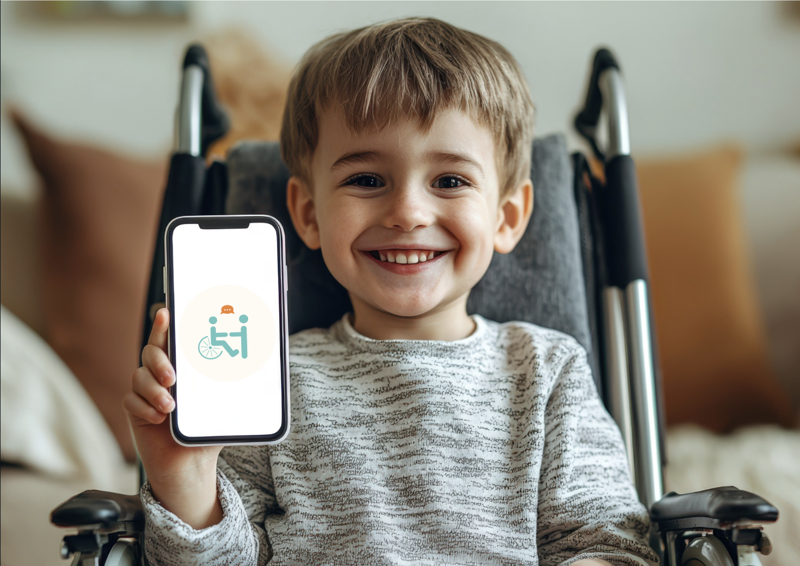

HandiTalk est une application innovante conçue pour améliorer la communication des enfants et adultes en situation de handicap ou de déficience visuelle. En combinant des pictogrammes intuitifs et des sons adaptés, HandiTalk permet à ses utilisateurs de s'exprimer facilement, renforçant ainsi leur inclusion sociale et leur autonomie. Que ce soit pour des besoins éducatifs, sociaux ou professionnels, HandiTalk s'adapte à chaque situation, devenant un outil précieux pour des millions de personnes à travers le monde.
La communication est un droit fondamental, mais pour de nombreuses personnes, elle représente un défi quotidien. Les outils classiques de communication ne tiennent souvent pas compte des besoins spécifiques des personnes en situation de handicap. Les enjeux de l'inclusivité :
Accès à une communication universelle : permettre à chacunde s’exprimer, quelles que soient ses capacités.
Renforcement de la confiance en soi : offrir des outils quimettent fin à l’isolement social.
Création de ponts entre les communautés : favoriser unemeilleure compréhension mutuelle.
HandiTalk se positionne comme une réponse concrète à ces enjeux, avec une interface pensée pour être accessible à tous.

Pictogrammes personnalisables : Un vaste catalogue de pictogrammes qui peuvent être adaptés aux besoins spécifiques de chaque utilisateur.
Sons intuitifs : Des sons associés à chaque pictogramme pour une meilleure compréhension, même pour les personnes ayant des difficultés visuelles.
Mode éducatif : Des jeux interactifs et exercices pour apprendre à utiliser les pictogrammes et développer des compétences en communication.
Multilingue : Une prise en charge de plusieurs langues pour s'adapter à un public international.
Mode hors ligne : Une utilisation possible sans connexion internet, idéale pour les déplacements ou les zones sans réseau.

Facilité d’utilisation : Une interface intuitive adaptée aux enfants et adultes, même sans expérience numérique.
Autonomie accrue : Les utilisateurs peuvent s’exprimer sans avoir besoin d’un accompagnant constant.
Inclusion sociale : En facilitant les interactions, HandiTalk aide à briser les barrières sociales.
Adaptabilité : Que ce soit en milieu scolaire, professionnel ou familial, l’application répond à tous les contextes.
HandiTalk ne se limite pas à un simple outil de communication. Il transforme profondément la manière dont les personnes en situation de handicap interagissent avec leur environnement. Dans l'éducation :
Favorise l’apprentissage des concepts de base grâce à des pictogrammes interactifs.
Aide les enseignants à adapter leur pédagogie pour inclure tous les élèves.
Dans la vie quotidienne :
Permet aux utilisateurs de prendre part à des discussions, de participer à des activités et de se sentir valorisés.
Renforce les liens familiaux et amicaux grâce à une communication facilitée.
HandiTalk est plus qu’une application, c’est un pont vers un monde plus inclusif. Que vous soyez parent, enseignant, professionnel de la santé ou utilisateur final, HandiTalk est conçu pour vous.